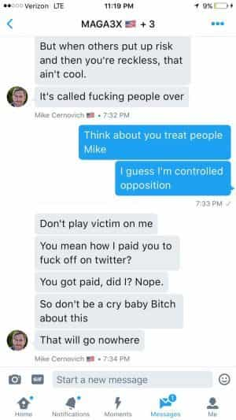

Michael is the author of Staying Married in a Degenerate Age. Follow him on Twitter or Facebook. You can read more of his writing at Honor and Daring.


The end of the year is usually a quiet time for news, but it wasn’t quiet for some of Donald Trump’s most ardent supporters. The political movement known as the Alt Right saw a giant rift open over some important ideological questions. The fracture resulted in two different camps: the Alt Right and the Alt Lite with the latter carrying most of the big name internet celebrities. Given that the Alt Right played such a big role in the election of Donald Trump, how does the split figure into the future of politics?

The split started due to a disagreement between the organizers of the DeploraBall, a party for Trump supporters to celebrate his victory. The organizers of DeploraBall are some of the best known names on social media, including Mike Cernovich, Gavin McInnes, Jack Posobiec, and Bill Mitchell. One of the other organizers, who goes by the Twitter handle  “Baked Alaska†had apparently started tweeting about Jewish control of the media.
Jesse it’s a common fact the media is run in majority by Jewish people, it’s similar to observing blacks are good at basketball 🀠congrats! https://t.co/Pe76guONwV
— Based Alaska™ (@bakedalaska) December 26, 2016
Prior to this, Baked Alaska’s tweets had been pretty mainstream Trumpian—build the wall, deport illegals, and bring back jobs. But with his foray into the Jewish Question (JQ), the question of whether Jews as a group sometimes act against the interests of their host societies, Baked Alaska was treading outside standard Trump policy. Apparently, it also provoked the DeploraBall organizers because he was called out on it by Cernovich. Baked Alaska posted the following private conversation with Mike on his Twitter account:

Baked Alaska obviously decided not to stop talking about the JQ because shortly after that, his name was removed from DeploraBall. Baked Alaska went public with what happened. With that, the battle lines were drawn. The Alt Right was divided into roughly two camps. There was the camp that sided with Cernovich that espoused mainstream Trumpian civic nationalism. This camp, now known as the Alt Lite, included most of the big name Trump supporters: Milo Yiannopolous, Cernovich, and Paul Joseph Watson. The other camp is the traditional Alt Right which viewed the ousting of Baked Alaska as a betrayal.

The dust up quickly became a conflagration when Bill Mitchell, the highly popular host of the pro-Trump radio show  “Your Voice,†went on the offensive against the Alt Right calling them racists, anti-Semites, and Nazis. Mitchell even went so far as to threaten a fellow Trump-supporter that he would notify her boss that she was associating with  “Neo-Nazis†simply because she followed people on Twitter who were critical of Mitchell.
As dramatic as this plot is, it only gets more convoluted. The DeploraBall was not solely planned by Trump-supporting internet personalities like Cernovich and Baked Alaska—the chief organizer is Jeff Giesea, a long-time Peter Thiel associate and start-up veteran. A Buzzfeed article on Giesea describes his unique background:
Among the men’s rights alumni, opportunistic culture warriors, outright white nationalists, and self-made digital media impresarios who compose the leadership of the pro-Trump internet, Jeff Giesea is unique. First, he’s not public: He hardly tweets, he doesn’t have his own video channel, and he doesn’t pick fights online. Second, while much of the pro-Trump internet lambastes out-of-touch, Ivy League–educated city dwellers, Giesea is a gay Stanford graduate who lives in Washington, DC. He is precisely what people mean when they talk about the coastal elite.
Reading between the lines, Giesea was the agent who helped turn the DeploraBall from an Alt Right event (named after Hillary’s basket of deplorables) into a big tent event that emphasized Trump’s civic nationalism. This makes sense when you consider Giesea’s own position: “I’m gay, why would I support a movement that wants to turn me into a lampshade?”
Thus, the clash with the Alt Right appears deliberate. It was only a matter of time before the Alt Right was  “purged†from the mainstream Trump movement. It just happened very conveniently that the unpleasant task of firing Baked Alaska fell to Cernovich, who up until then was a very popular Alt Right figure. Did Giesea orchestrate the rift? I don’t know, but if he did my hat is off to him. He is clearly a master of the 48 Laws of Power.

What are we to make of the split between the Alt Right and the Alt Lite? First, we have to continue to fight for the victory both groups achieved in the election of Donald Trump. If Trump is able to accomplish half of what he has promised, he will be the greatest president of modern times. But Trump’s agenda will face heavy opposition from the Democrats and cuckservative Republicans, both of whom are beholden to big money interests. For example, Trump promised to replace Obamacare, yet the Republican leadership is already dragging its feet. We are going to need everyone to put their elected representatives under pressure to hew to Trump’s mandate. In this regard, at least, the Alt Right and Alt Lite are allies, not enemies.
The bigger issue is what we are going to do going forward. Trump’s civic nationalism is now the new right. It is natural for the civic nationalists to want to define the boundaries of their new movement but it is unwise to do this by calling people to the right racists. After all, Trump’s platform is still deemed to be racist by the Democrats and establishment Republicans. When Trump called for deporting illegals, the establishment rose in unison to express their outrage. And when Trump called to stop immigration from Islamic countries, Paul Ryan made a speech explicitly disavowing Trump’s proposal saying it was  “not our values.†Up until November 9th, Trump was the person the establishment was trying to purge by calling him racist and misogynist.
One of the things the 2016 election revealed was that the real battle is not between small-government conservatives and big-government liberals, but between globalists and nationalists. Up until Trump’s run, it was the globalist elite that ran everything, including education, Hollywood, the media, and both political parties. I’ve gradually come to the conclusion that words like  “racist,†“anti-Semite,†“misogynist,†homophobe,†“Nazi,†and  “white supremacist†are terms the globalist elite has formulated over time to set the boundaries of what Americans (and Europeans) can discuss. Through their control of institutions, the elite have trained us to immediately reject a person who is branded as being an  “ist†of some sort without considering whether his ideas hold any merit.
The genius of the Alt Right lies precisely in the realization that all of these terms are empty so they are able to discuss  “forbidden†issues. For example, Richard Spencer’s ideal of an all-white ethnostate may seem farfetched in the US, but there is nothing wrong with recognizing that other ethnostates, such as Israel and Japan, exist. If they can have one, why can’t whites? Or why can’t they at least maintain a majority status? Similarly, a sovereign country has the right determine if it will allow immigration and, if it does, who will be allowed to immigrate. There is nothing inherently racist about questioning the Immigration Act that only came into being in 1965.
In other words, the Alt Right serves a valid function in moving the discussion forward. Ideally, the Alt Right will help shape the future Republican Party to ensure that it doesn’t fall back into mainstream cuckservatism after Trump’s presidency ends. We’ve only started to extricate ourselves from the thought-stopping terms of  “racist†and  “Nazi.†We can’t go backward and let the elite dictate what we can discuss when it comes to the health of our nation.
I expect the rocky relationship between the Alt Right and the Alt Lite to continue for the duration of Trump’s presidency but either group is better than the cuckservatives who used to run the show. One thing is certain: the genie that was unleashed during Trump’s run and the rise of the Alt Right is not going back in the bottle. The next few years are going to be exciting.
Read More:Â The Political Nature of Man